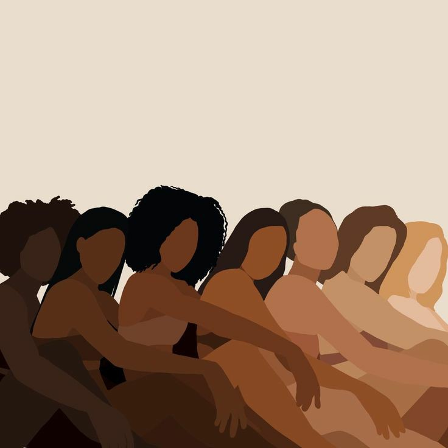

Padrão de beleza é um termo que se usa para fazer referência ao modelo de beleza e é considerado ideal pela sociedade, isto é, conjunto de normas estéticas que ditam como deve ou não ser o corpo e a aparência das pessoas.

Não se encaixar nos padrões de beleza estabelecidos pela sociedade, causa diversas oscilações na autoestima, que pode levar a distorção da imagem corporal, uma vez que, inclui comparações entre o corpo real e o corpo ideal.